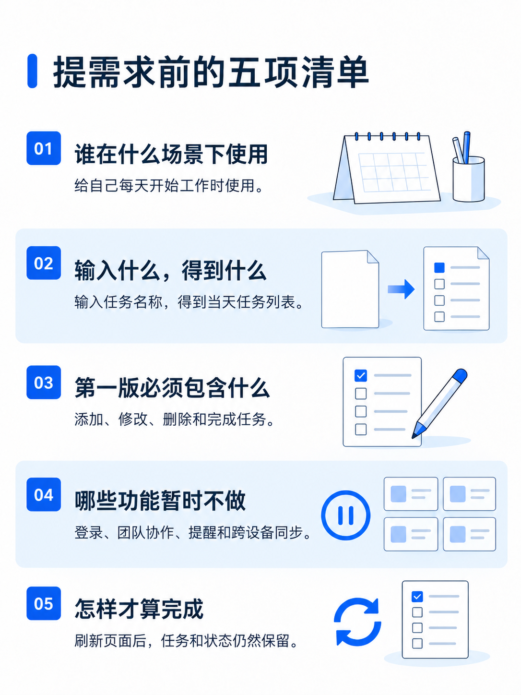
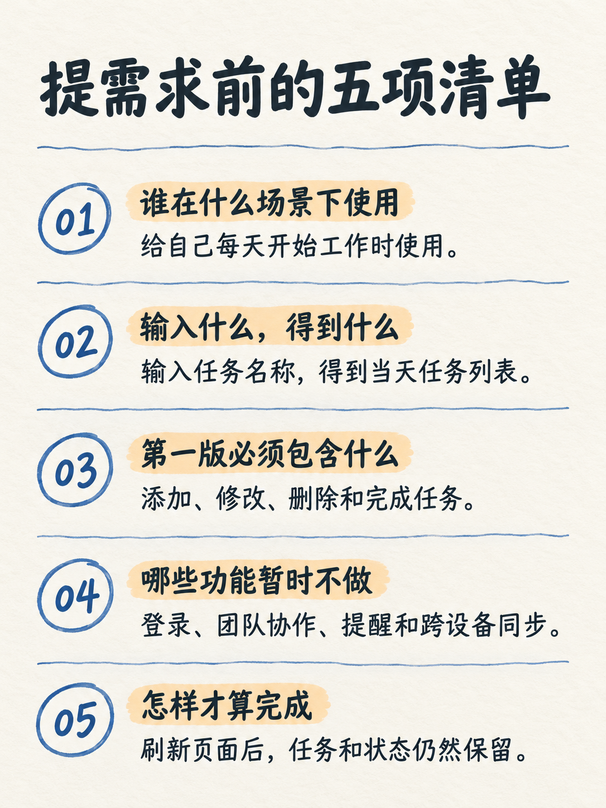
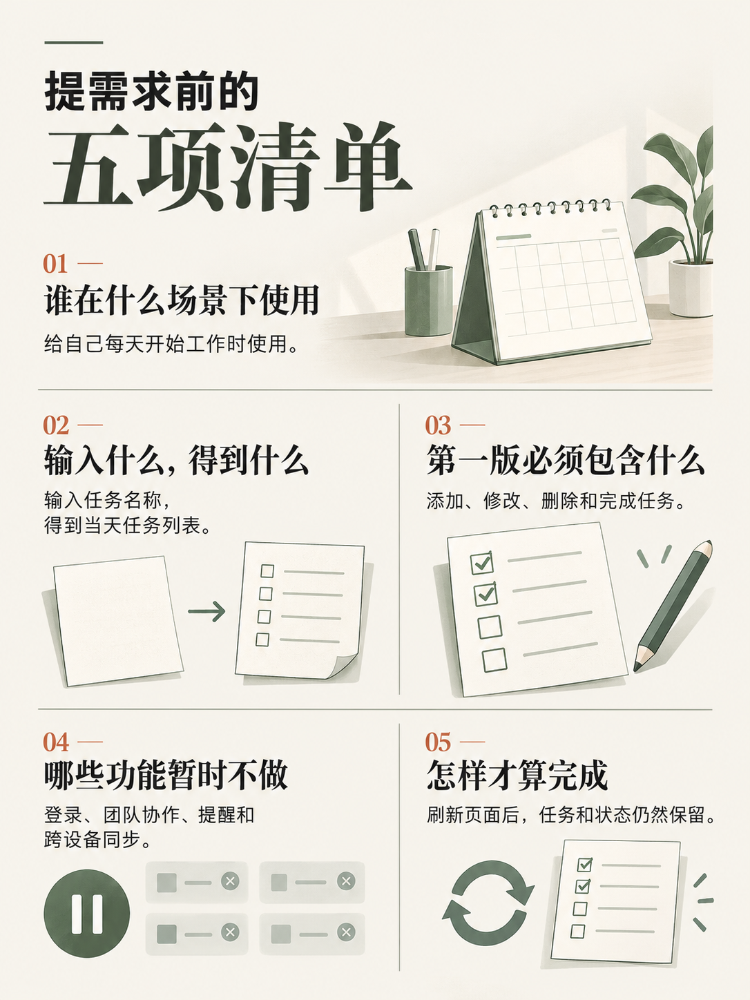
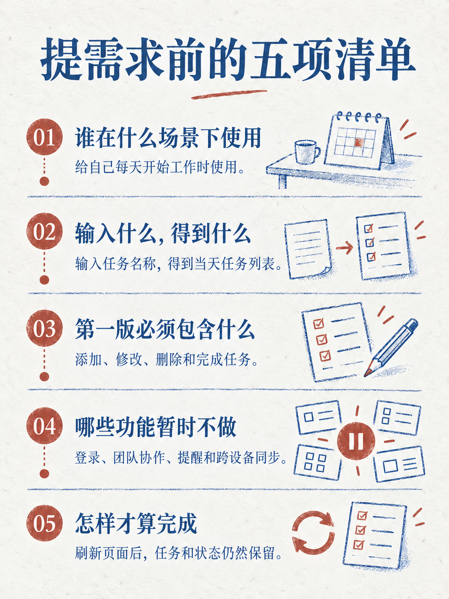
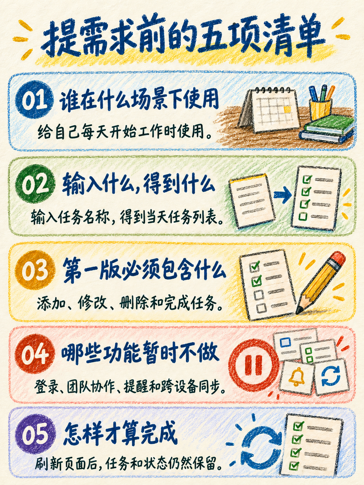
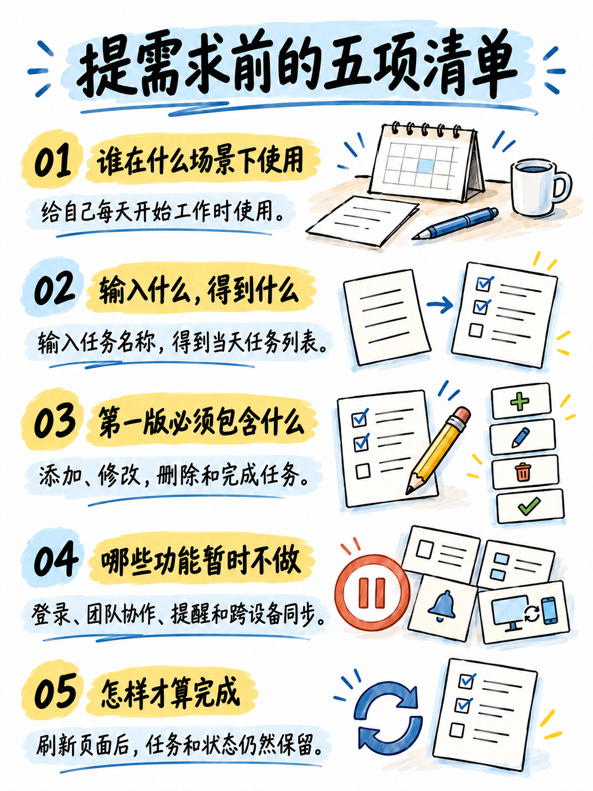
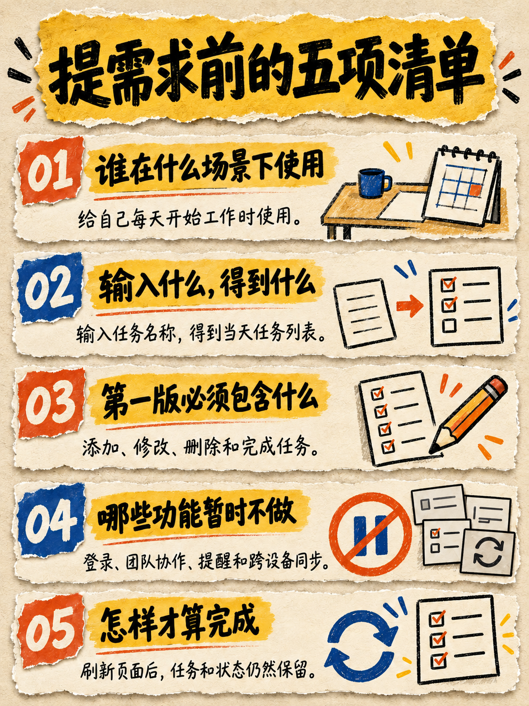
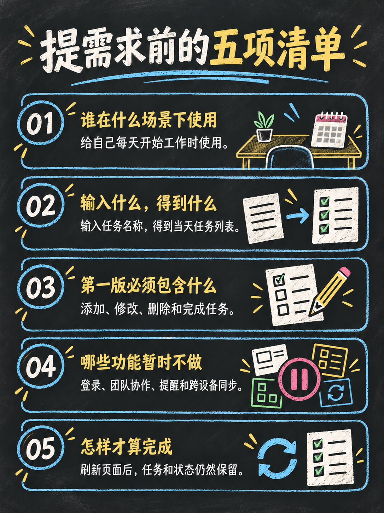

提需求前的五项清单 · 小红书图文 · 1086×1448 · 3:4 · 正文无人物
文案与信息结构一致，分别独立生成。新增五款展示已移除头像符号的修正版。
示例说明 · 生成与复核清单 · 测试文案
body-clean

查看原图 · 生成提示词 · 新旧对照
body-sketch

查看原图 · 生成提示词
body-editorial

body-duotone-print

查看原图 · 生成提示词 · 修正提示词
body-crayon

body-digital-notes

body-paper-collage

body-chalkboard
